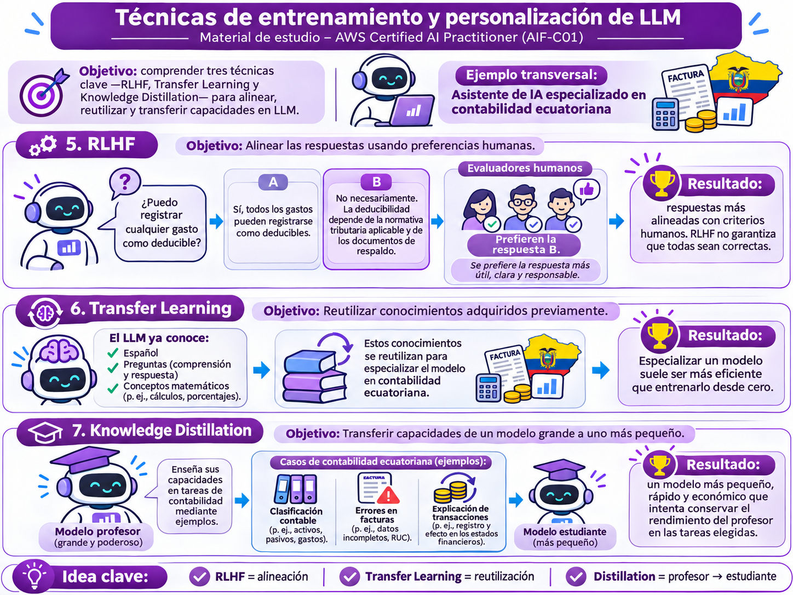

RLHF, Transfer Learning y Distillation
Tres ideas diferentes: preferencias humanas, reutilización de conocimiento y profesor–estudiante.

Tres ideas diferentes: preferencias humanas, reutilización de conocimiento y profesor–estudiante.
